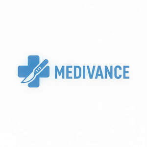

Trade Mark Journal No.2026/008 20 February 2026
UK00004309151 11 December 2025 (8,10,35)

- Class 8
- Hand tools and implements, hand-operated; cutlery; side arms, except firearms; razors; Abrading instruments [hand instruments]; Abrading instruments; Sterile body piercing instruments; Hand tools and implements, hand-operated; cutlery; side arms, except firearms; razors; Hair cutting scissors; Hair clippers; Hand-operated hair clippers; Scissor blades; Electric hair clippers; Electric hair crimper; Electric hair crimpers; Electric hair cutters; Electric ear hair trimmers; Hair clippers for babies; Non-electric hair clippers; Nasal hair trimmers; Electric hair braiders; Hair braiders, electric; Electric hair trimmers; Hairdressing scissors; Cuticle scissors; Electric hair straighteners; Electric nasal hair trimmers; Electric hair straightening irons; Hand implements for hair curling; Hair curling (Hand implements for -); Electric irons for styling hair; Hair straightening irons; Nail scissors.
- Class 10
- Surgical, medical, dental and veterinary apparatus and instruments; artificial limbs, eyes and teeth; orthopaedic articles; Surgical instruments; Surgical apparatus and instruments; Surgical instruments and apparatus; Surgical cutting instruments; Shears [surgical instruments]; Surgical instruments for use in orthopedic surgery; Surgical instruments for use in spinal surgery; Surgical apparatus and instruments for dental use; Surgical devices and instruments; Surgical apparatus and instruments for medical use; Surgical apparatus and instruments for veterinary use; Ultrasonic diagnostic instruments for surgical use; Pipetting instruments for surgical use; Suturing instruments; Medical instruments for percutaneous tracheostomy; Retractors [medical instruments]; Plates in the nature of orthopaedic surgical instruments; Cases fitted for surgical instruments; Medical instruments; Orthopaedic instruments; Ultrasonic cleaning instruments for surgical use; Urological instruments; Apparatus and instruments used in foot surgery; Trays for holding surgical instruments; Optical instruments for medical endoscopy; Surgical forceps; Receptacles for receiving surgical instruments; Urological apparatus and instruments; Lag screws in the nature of orthopaedic surgical instruments; Medical and surgical laparoscopes; Medical apparatus and instruments; Compressing screws in the nature of orthopaedic surgical instruments; Instruments for use in gastrointestinal surgery; Ophthalmic instruments; Hemostatic suture instruments; Dental apparatus and instruments; Ophthalmological instruments; Hemostatic instruments; Medical instrument cabinets; Medical diagnostic instruments; Medical instrument tables; Surgical catgut; Electromedical diagnostic instruments; Gynaecological instruments; Dental instruments; Orthodontic instruments; Surgical retractors; Ostomy instruments; Instruments for use in medical analysis; Medical analysis instruments; Laser instruments for medical use; Blunt curettes [for surgical use]; Catgut for surgical purposes; Medical and veterinary apparatus and instruments; Electronic endoscopes for surgical use; Diagnostic instruments for ophthalmology; Veterinary apparatus and instruments; Medical instrument stands; Ultrasonic diagnostic instruments for medical use; Surgical bougies; Medical instruments for cutting tissue; Medical and surgical catheters; Electric scalpels [for surgical purposes]; Medical therapy instruments; Electronic medical instruments; Optometric instruments; Urethral catheterization instruments; Radiotherapy instruments for medical use; Catgut for surgical use; Prosthetic implant instruments; Ultrasonic diagnostic instruments for dental use; Electro medical instruments; Endoscopes for surgical use; Otolaryngology instruments; Surgical perforators; Hammers for medical or surgical use; Surgical probes; Prosthetic instruments for dental purposes; Dissecting instruments for medical use; Diagnostic instruments for medical use; Therapeutic instruments for ophthalmology; Dressing forceps [for surgical use]; Instruments for use in prosthetic dentistry; Diagnostic ultrasound instruments for medical use; Valves for use in medical infusion instruments; Surgical staplers; Surgical scissors; Mallets for surgical use; Surgical needles; Staplers for surgical purposes; Surgical knives; Apparatus for the application of laser radiation for surgical purposes; Surgical pliers; Dental instruments; Dental apparatus and instruments; Orthodontic instruments; Prosthetic instruments for dental purposes; Lamps for use with dental instruments; Surgical apparatus and instruments for dental use; Instruments for use in prosthetic dentistry; Ultrasonic diagnostic instruments for dental use; Instruments for use in the fitting of dental protheses; Filling instruments for dental purposes; Optometric instruments; Medical instrument cabinets; Dental apparatus; Medical instruments; Surgical instruments; Dental equipment; Dental articulators; Articulators [dental]; Chiropractic instruments; Instruments for applying dental filling; Dental tools; Optical instruments for medical endoscopy; High frequency coagulation instruments dental purposes; Dental x-ray apparatus; Dental picks for use in dental treatment; Medical instrument tables; Teeth whitening apparatus for dental purposes; Ophthalmological instruments; Medical instrument stands; Orthopaedic instruments; Retractors [medical instruments]; Dental apparatus, electric; Medical diagnostic instruments; Electronic medical instruments; Dental implants; Medical hearing instruments; High frequency cutting instruments for dental purposes; Dental spectrocolormeters for determining colours of dental prostheses; Ophthalmic instruments; Dental braces; Instruments for use in medical analysis; Medical analysis instruments; Medical and veterinary apparatus and instruments; Surgical apparatus and instruments; Surgical instruments and apparatus; Dental prostheses; Prosthetic implant instruments; Medical apparatus and instruments; Dental probes; Surgical apparatus and instruments for veterinary use; Medical therapy instruments; X-ray appliances for dental and medical use; Dental prostheses in the form of inlays; Ultrasonic diagnostic instruments for medical use; Ultrasonic diagnostic instruments for surgical use; Veterinary apparatus and instruments; Surgical apparatus and instruments for medical use; Diagnostic instruments for ophthalmology; Ultrasonic cleaning instruments for medical use; Dental burs; Burs (Dental -); Interdental immobilization instruments; Laser instruments for medical use; X-ray apparatus for dental imaging; Urological instruments; Otolaryngology instruments; Apparatus for use by dental hygienists; Ultrasonic diagnostic instruments for veterinary use; Apparatus for use in the preparation of dental prostheses; Lamps for use with medical instruments; X-ray structure analysis instruments for medical use; Forceps for dental technical purposes; Dental descaling apparatus; Electro medical instruments; Surgical devices and instruments; Ultrasonic cleaning instruments for surgical use; Medical testing instruments; Electronic acupuncture instruments; Dental x-ray mouth props; Implant bridges for dental purposes; Dental moulding devices.
- Class 35
- Advertising; business management; business administration; office functions; Retail services in relation to medical instruments.
Amjad Parvez Begum